Graph Theory: Paths & Connectivity
The Basics of Social Network Analysis
Part 1: Indirect Connections & Paths
Adjacency vs. Indirect Connections
- Adjacency captures direct connections between nodes:
- If \(A\) is adjacent to \(B\), they share an edge.
- But many network processes operate indirectly:
- We must look beyond immediate contacts to the “friends of our friends.”
- Diffusion Channels: Indirect connections act as channels for gossip, information transmission, disease contagion, or social influence.
- In graph theory, indirect connections are formalized using three core concepts:
- Path, Connectivity, and Reachability.
What is a Path?
- A path between \(u\) and \(v\) is an alternating sequence of nodes and edges that:
- Begins with an origin node (\(u\)).
- Ends with a destination node (\(v\)).
- Does not repeat any nodes (which implies edges are not repeated either!).
- Anatomy of a Path (e.g. Red path from \(B\) to \(D\) on the right):
- Written as: \(B-D = \{BE, ED\}\) (length \(l = 2\)).
- Origin: \(B\), Destination: \(D\) (together called the end nodes).
- Inner Nodes: \(E\) (the nodes in between).

Multiple Paths & Geodesics
- Multiple distinct paths can connect the same pair of nodes.
- Let’s trace paths from \(B\) to \(A\):
- \(P_1 = \{BE, ED, DA\} \quad (l = 3)\)
- \(P_2 = \{BE, EC, CA\} \quad (l = 3)\)
- \(P_3 = \{BE, ED, DC, CA\} \quad (l = 4)\)
- \(P_4 = \{BE, EC, CD, DA\} \quad (l = 4)\)
- Shortest Path (Geodesic):
- The path of minimum length between two nodes.
- Geodesic Distance: The length of the geodesic path (here, geodesic distance \(d(B, A) = 3\), with tied geodesics \(P_1\) and \(P_2\)).
What is a Cycle?
- A cycle is a path of length 3 or larger that starts and ends on the same node.
- Key Concepts:
- Origin and destination are identical, but inner nodes are unique.
- Graph Girth: The length of the shortest cycle in a graph (here, girth is \(3\), the triangle \(\{ED, DC, CE\}\)).
- Graph Circumference: The length of the longest cycle in a graph (here, circumference is \(4\), \(\{ED, DA, AC, CE\}\)).
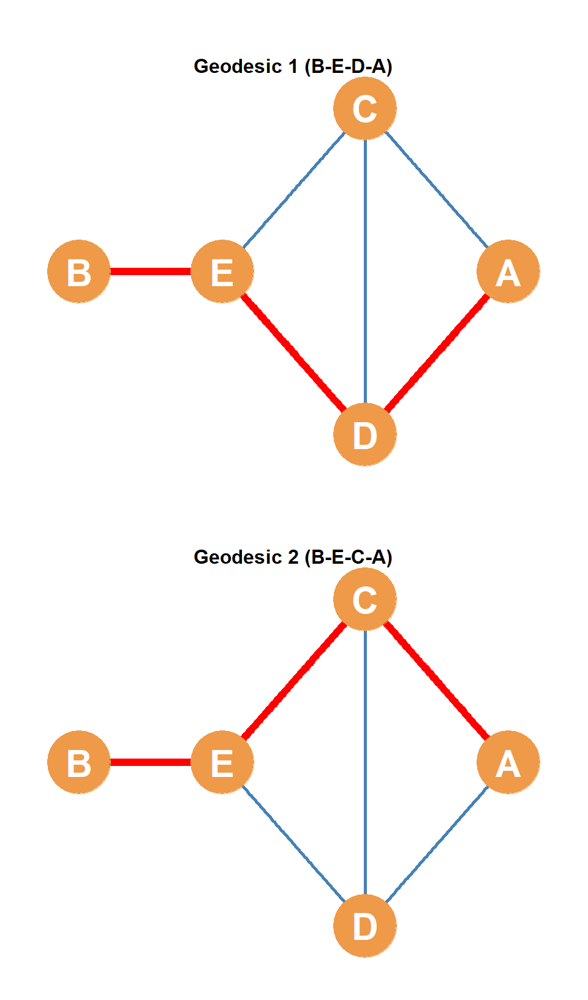
Cycle Length: Girth vs. Circumference
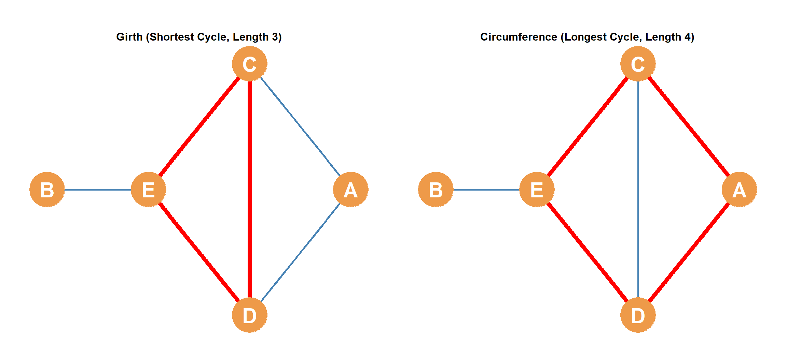
Special Paths: Hamiltonian Paths & Cycles
- Hamiltonian Path: A path that visits every single node in the graph exactly once.
- Example: The red path on the right: \[B \rightarrow E \rightarrow C \rightarrow A \rightarrow D\]
- Hamiltonian Cycle: A cycle that visits every single node in the graph exactly once and returns to the origin.
- Question: Is there a Hamiltonian cycle in this graph?
- No! Since node \(B\) is a “leaf node” (\(k_B = 1\)), any cycle must enter and leave \(B\) via different edges, requiring \(k_B \ge 2\).
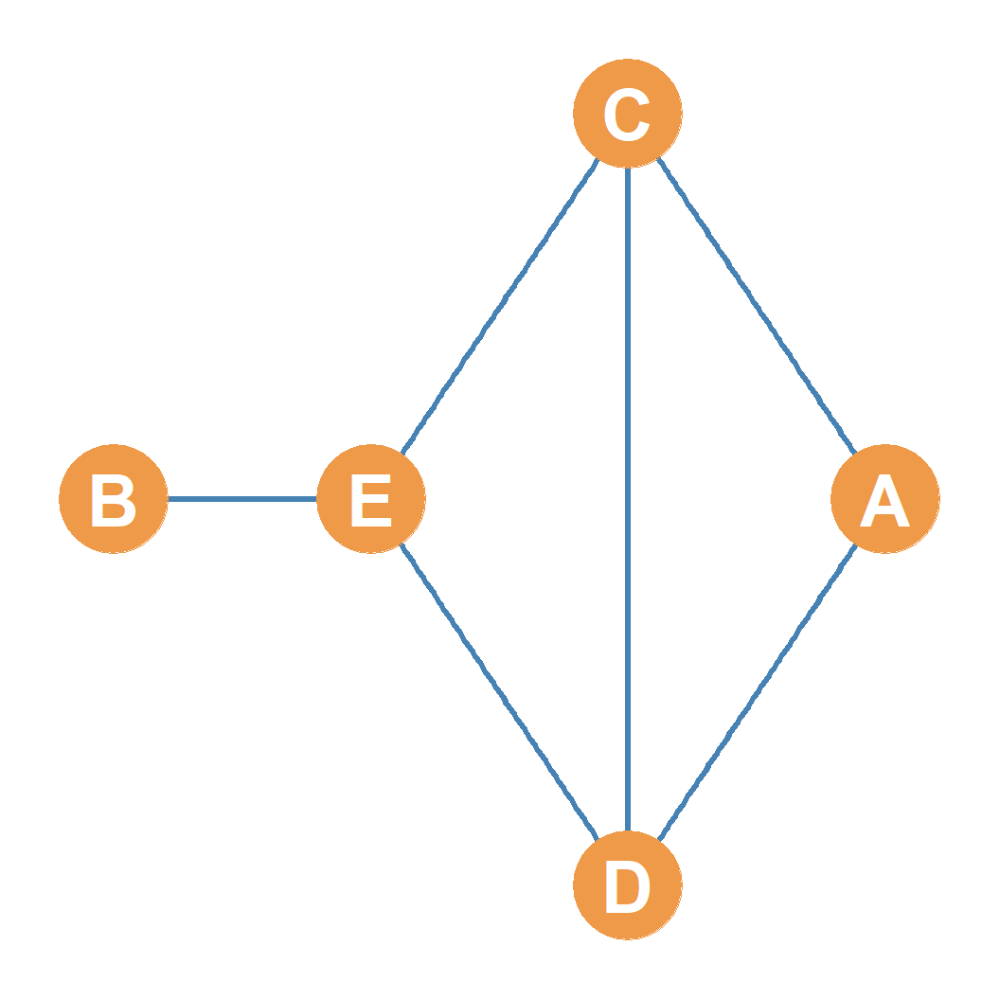
Walks, Trails, and Paths
- Walk: Any sequence of alternating nodes and edges connecting \(u\) to \(v\).
- No restrictions: Nodes and edges can be repeated as much as you want!
- e.g., \(\{B \rightarrow E \rightarrow C \rightarrow E \rightarrow D\}\) (traverses \(E\) and edge \(E-C\) twice).
- Trail: A walk that does not repeat any edges.
- Repeated nodes are allowed, but every edge in the sequence must be unique.
- e.g., \(\{A \rightarrow C \rightarrow D \rightarrow E \rightarrow C \rightarrow B\}\) (repeats node \(C\) but all edges are unique).
- Path: A walk that does not repeat any nodes (which means edges cannot be repeated either).
- The Nested Hierarchy: All paths are trails, and all trails are walks, but the reverse is not true: \[Paths \subset Trails \subset Walks\]
Walks & Trails: Visual Examples

Part 2: Directed Paths & Reachability
Paths in Directed Graphs (Digraphs)
- In directed graphs, paths must strictly respect the direction of the arrows!
- Let’s trace directed paths from \(A\) to \(B\) in our digraph:
- \(P_1 = \{AC, CE, EB\} \quad (l = 3)\)
- \(P_2 = \{AD, DE, EB\} \quad (l = 3)\)
- \(P_3 = \{AC, CD, DE, EB\} \quad (l = 4)\)
- But can we find any directed path from \(B\) to \(A\)?
- No! All arrows lead away from \(A\) and toward \(B\).
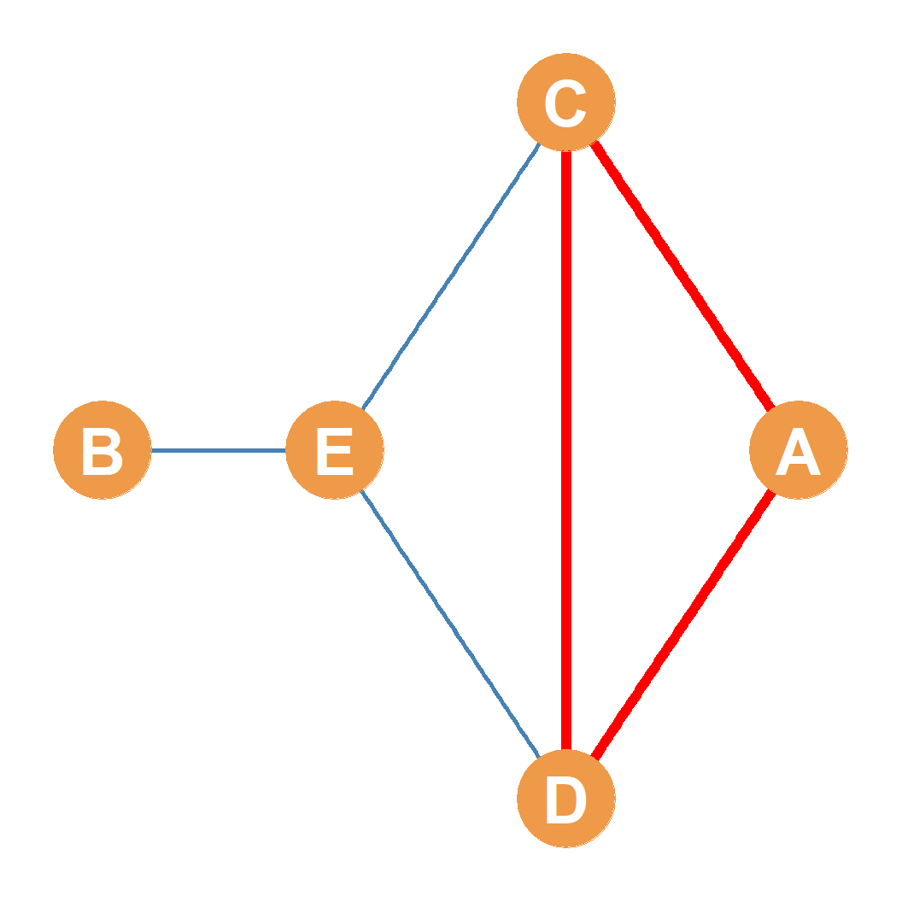
Directed Reachability
- Asymmetric Reachability:
- Node \(A\) can reach \(B\) via directed path \(\{AD, DE, EB\}\) (\(l_{AB} = 3\)).
- But node \(B\) cannot reach \(A\) because we cannot travel against the arrows (\(l_{BA} = \infty\)).
- Mutual Reachability:
- Two nodes \(u\) and \(v\) are mutually reachable if there exists a directed path from \(u \rightarrow v\) AND from \(v \rightarrow u\).
- These two paths do not have to be the same length!
- Example: Nodes \(B\) and \(C\) are mutually reachable:
- \(B\) reaches \(C\) via \(\{BE, ED, DC\} \quad (l = 3)\)
- \(C\) reaches \(B\) via shortest path \(\{CE, EB\} \quad (l = 2)\)
Directed Reachability: Visual Examples

Directed Cycles & DAGs
- A directed cycle is a cycle where all arrows flow in a single, continuous direction.
- Example: Cycle starting and ending at \(C\):
- \(\{CE, ED, DC\} \quad (l = 3)\)
- Example: Cycle starting and ending at \(C\):
- Directed Acyclic Graphs (DAGs):
- Directed graphs that contain no directed cycles.
- e.g. strict organizational command structures, directed trees.
- Anti-symmetric relations (like “is boss of”) structurally forbid cycles to maintain consistent hierarchy.
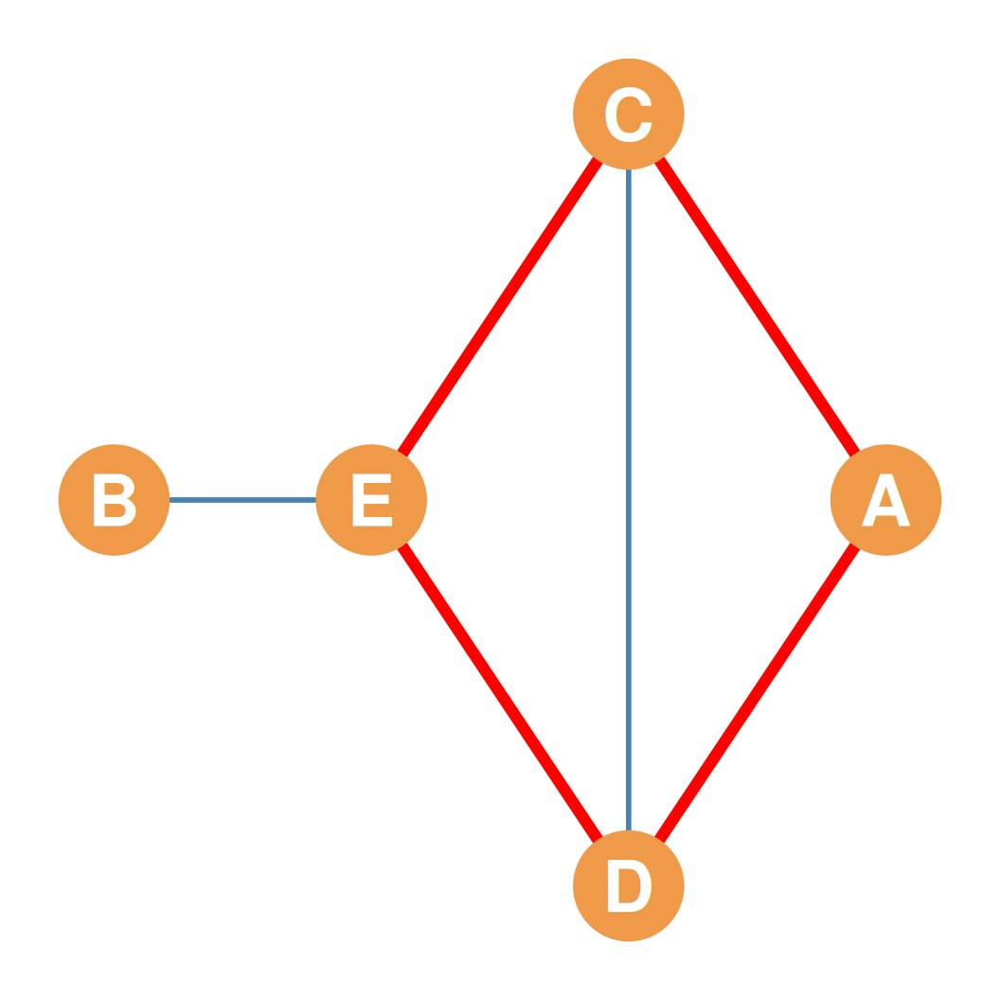
Ignoring the Arrows: Semipaths
- What if we want to trace connections in a directed graph but ignore the arrows?
- This is called a semipath (or semicycle if it is a closed loop).
- A semipath treats directed arcs as undirected edges.
- Example: Semipath connecting \(B\) and \(A\):
- \(\{BE, EC, CA\}\) (highlighted in red on the right).
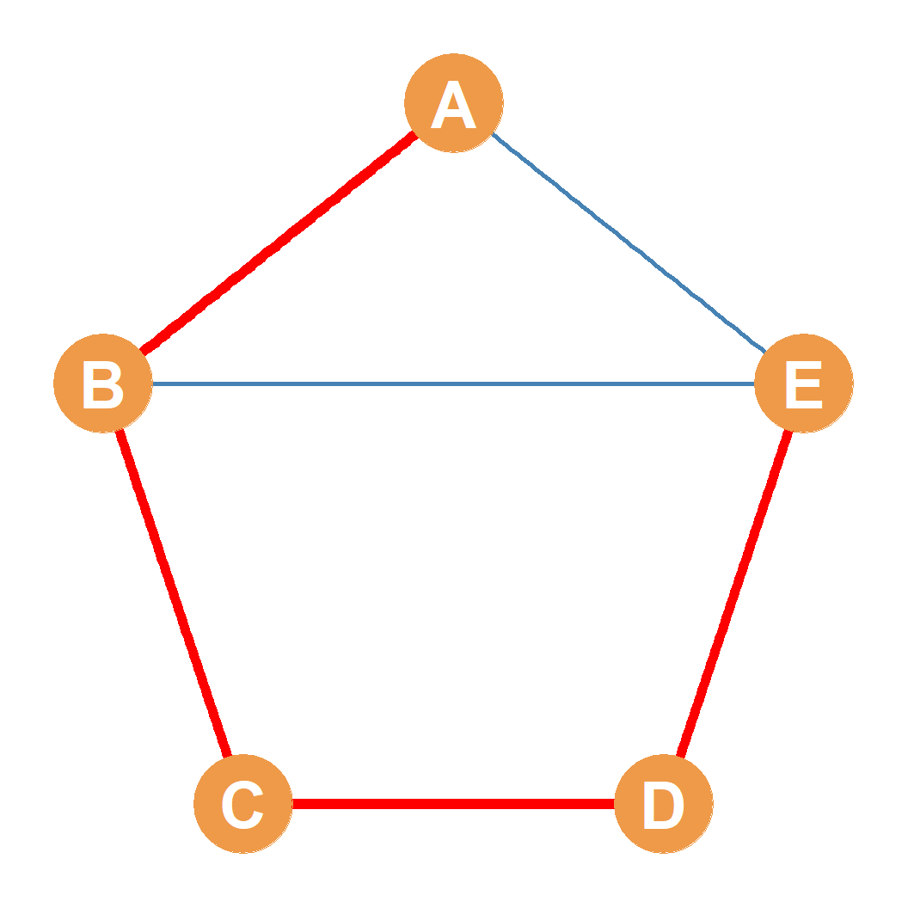
Part 3: Graph Connectivity & Components
Connected vs. Disconnected Graphs
Connected Graph (Single Component)
Disconnected Graph (Two Components)
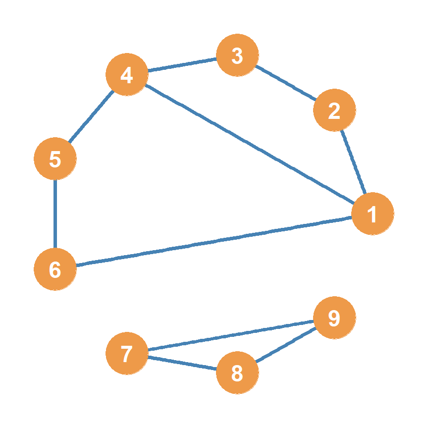
- Connected: A path of some finite length exists between every pair of nodes in the graph (left).
- Disconnected: At least one pair of nodes is unreachable; the graph is split into separate pieces (right).
Components & The Giant Component
Disconnected Graph with 2 Components
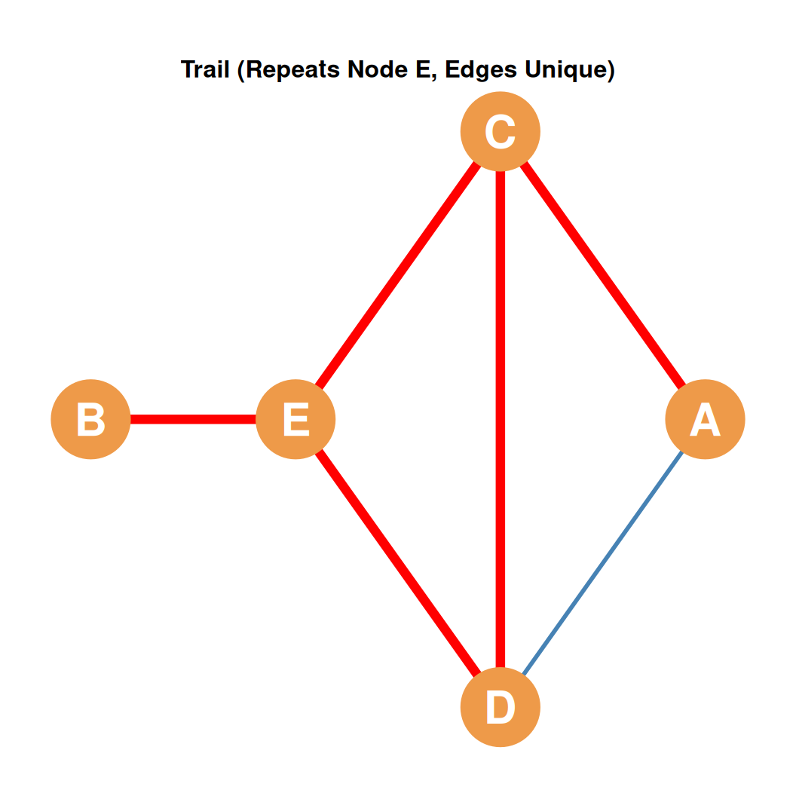
- Component: A maximally connected subgraph within a larger disconnected graph.
- The graph on the left contains exactly two components.
- Giant Component: The largest connected component in a disconnected graph.
- The red component \(\{A, B, C, D, E, F\}\) is the giant component (of order 6).
- The blue component \(\{G, H, I\}\) is a smaller component (of order 3).
Part 4: Edge and Node Connectivity (Cutsets & Bridges)
Edge Cutsets & Connectivity
- We can disconnect a connected graph by removing a subset of its edges.
- Edge Cutset:
- Any set of edges whose removal disconnects the graph into two or more components.
- Minimum Edge Cutset:
- An edge cutset containing the minimum possible number of edges needed to disconnect the graph.
- Edge-Connectivity (\(\lambda(G)\)):
- The number of edges in a minimum edge cutset.
- Bridge:
- A single edge whose removal disconnects the graph (a minimum edge cutset of size 1, so \(\lambda(G) = 1\)).
Edge Cutsets: A Visual Example
- In our 5-node graph on the right:
- Edges A-C and B-C are highlighted in red (Before).
- Removing both edges:
- Disconnects \(\{C, D, E\}\) from \(\{A, B\}\) (After).
- This is an edge cutset of size 2.
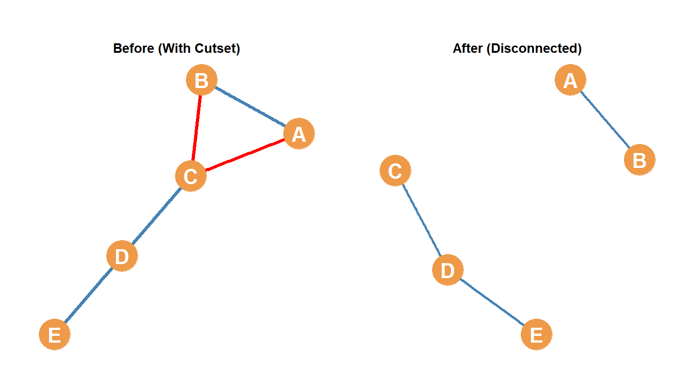
Bridges: A Cutset of Size 1
- Bridge:
- A single edge whose removal disconnects the graph (so \(\lambda(G) = 1\)).
- In our graph on the right, the edge C-D is highlighted in red.
- Removing edge C-D completely disconnects \(\{A, B, C\}\) from \(\{D, E\}\).
- Bridges represent the most critical, yet vulnerable transmission links in any network.

Advanced: Local Bridges
- In a classic paper on “The Strength of Weak Ties” (1973), Mark Granovetter developed the concept of a local bridge:
- An edge that, if removed, does not disconnect the entire graph, but significantly increases the shortest path length between its end nodes.
- Sociological Power:
- Local bridges act as crucial “shortcuts” that facilitate efficient, cross-group communication.
- They are the primary channels through which novel information diffuses between separate social clusters.
Local Bridge: A Visual Example
- Let’s look at the edge C-D highlighted in red:
- It connects the left cluster \(\{A, B, C\}\) to the right cluster \(\{D, E, F\}\).
- Is it a bridge? No. If removed, the graph remains connected via the bottom path (\(B-G-H-I-E\)).
- Is it a local bridge? Yes!
- Observed distance: \(d(C, D) = 1\).
- If removed, the distance increases to: \[d(C, D) = 5 \quad (C-B-G-H-I-E-D)\]
Node Cutsets & Connectivity
- We can also disconnect a graph by removing nodes (vertices).
- Removing a node also removes all edges incident to it—nodes “take their links with them”!
- Node Cutset (Vertex Cutset):
- Any set of nodes whose removal disconnects the remaining graph into two or more components.
- Minimum Node Cutset:
- A node cutset containing the minimum possible number of nodes needed to disconnect the graph.
- Node-Connectivity (\(\kappa(G)\)):
- The number of nodes in a minimum node cutset.
- Articulation Node (Cutpoint):
- A single node whose removal disconnects the graph (so \(\kappa(G) = 1\)).
Articulation Nodes: A Visual Example
- In our house graph on the right, node E is highlighted in red.
- Removing node E:
- Removes all of its incident edges: \(B-E, E-C, E-D\).
- Completely disconnects node \(B\) from the rest of the network.
- This is a node cutset of size 1 (Node \(E\) is an articulation node).
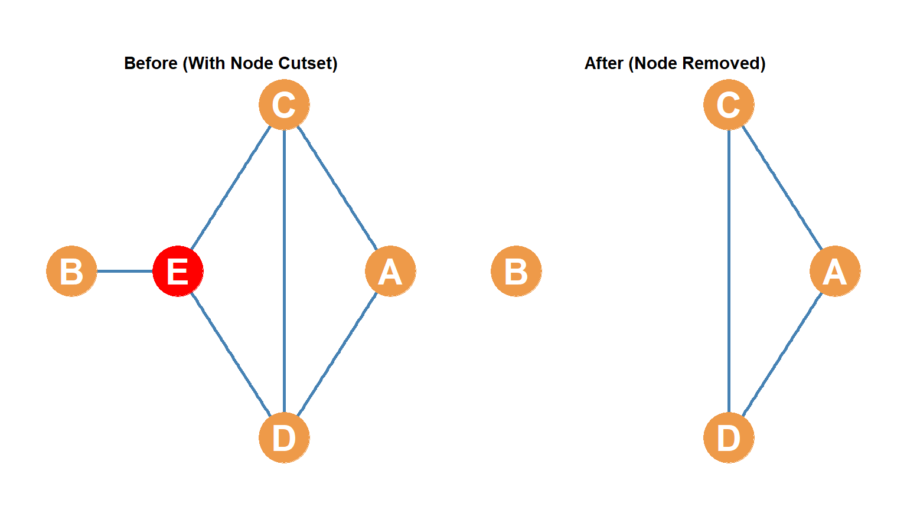
Node Cutset: An Edge Cutset Comparison
- Let’s look at node \(A\) in our house graph on the right.
- To disconnect \(A\) by removing edges, we must remove 2 edges: \(C-A\) and \(D-A\) (red).
- But to disconnect \(A\) by removing nodes, we only need to remove 1 node: \(E\) (the cutpoint that isolates \(B\)).
- This illustrates how node and edge connectivity can differ in the same graph.
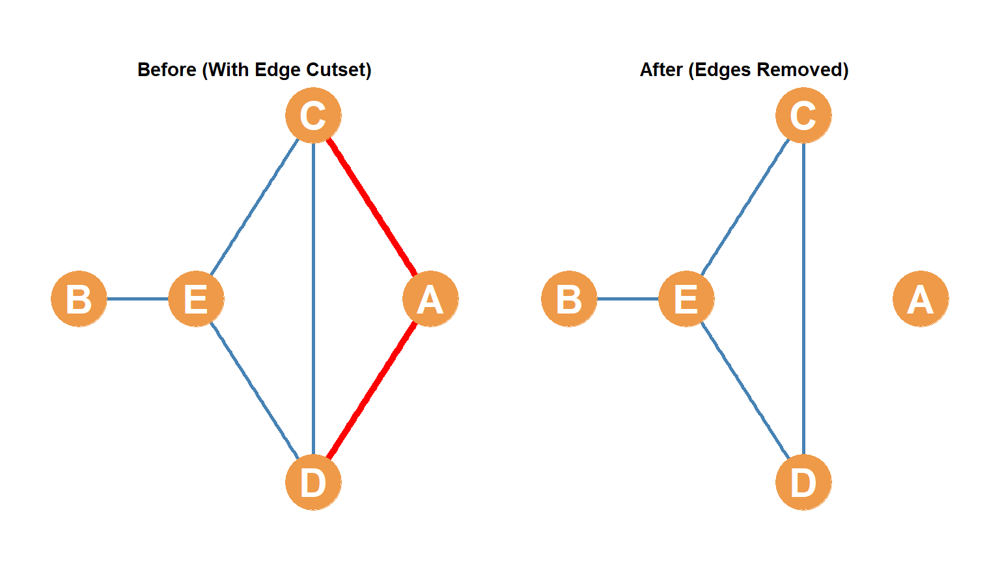
k-Connected Graphs & Robustness
- \(k\)-Connected Graph:
- A graph is \(k\)-connected (or \(k\)-node connected) if the minimum number of nodes required to disconnect it is \(k\).
- 1-Connected: Removing 1 node disconnects the graph (contains an articulation point).
- 2-Connected: Requires removing at least 2 nodes to disconnect it.
- 3-Connected: Requires removing at least 3 nodes to disconnect it.
- Menger’s Theorem (1927):
- If a graph is \(k\)-connected, there are at least \(k\) node-independent paths (paths that do not share any common inner nodes) connecting each non-adjacent pair of vertices.
- Social Cohesion: Higher \(k\)-connectivity indicates a more robust, cohesive, and redundant communication structure.
1-Connectivity: A Visual Example
- 1-Connected Graph:
- A graph where removing exactly 1 node can disconnect the network.
- Before (Left):
- A 7-node symmetric bow-tie graph, with the central bridge node (node 7) highlighted in red.
- After (Right):
- The central node 7 is removed, leaving two completely separate connected components (triangles).

2-Connectivity: A Visual Example
- 2-Connected Graph:
- A graph where it requires removing at least 2 nodes to disconnect it.
- Before (Left):
- A 6-node cycle with a diagonal chord (edge 2-5), with nodes 2 and 5 highlighted in red.
- After (Right):
- Removing nodes 2 and 5 leaves the graph split into two disconnected components: {1, 6} and {3, 4}.
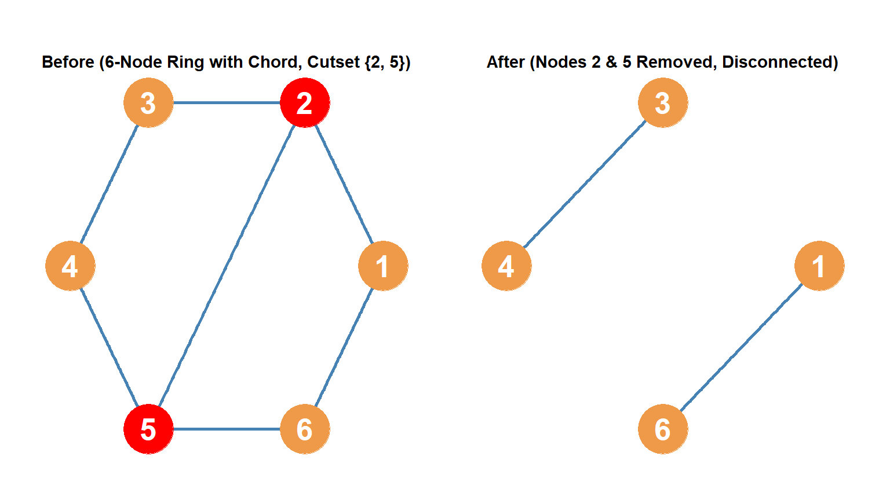
3-Connectivity: A Visual Example
- 3-Connected Graph:
- A graph where it requires removing at least 3 nodes to disconnect it.
- Before (Left):
- A 3-regular 6-node prism graph (two concentric triangles), with nodes 1, 2, and 6 highlighted in red.
- After (Right):
- Removing nodes 1, 2, and 6 leaves the single edge 4-5 and completely isolates node 3 (disconnected).
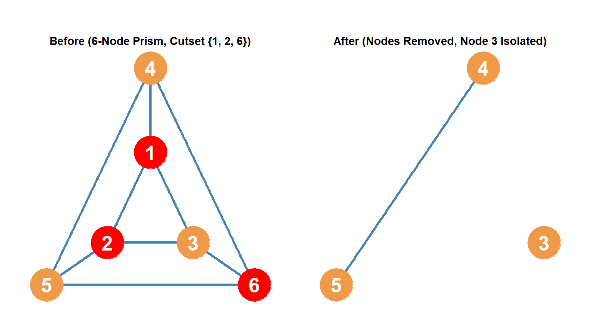
Graph Cutsets: Quantitative Cohesion
- Cohesion can be directly translated to graph-theoretic cutsets:
- Cohesive Groups: Have large edge-cutsets and node-cutsets. Many connections or individuals must be removed to disrupt or fragment the group.
- Fragmented Groups: Have small cutsets (such as bridges or single cutpoints). They are vulnerable to rapid disruption if key facilitators are removed.
- Any network can be decomposed into hierarchical subgraphs with specific levels of \(k\)-connectivity.
The Connectivity Inequality
- For any simple, undirected graph \(G\), we can formulate a fundamental mathematical theorem linking node-connectivity (\(\kappa\)), edge-connectivity (\(\lambda\)), and minimum degree (\(\delta\)): \[\kappa(G) \le \lambda(G) \le \delta(G)\]
- Why this holds:
- Removing a vertex deletes all its incident edges, so it is always easier or equal to disconnect a graph by removing nodes than by removing edges.
- Both are bounded by the minimum degree, as you can always isolate the least-connected node by removing all of its neighbors/incident edges.
- Example: In our undirected house graph:
- Minimum degree \(\delta(G) = 1\) (node \(B\) has degree 1).
- Edge connectivity \(\lambda(G) = 1\) (the bridge edge \(B-E\)).
- Node connectivity \(\kappa(G) = 1\) (the cutpoint node \(E\)).
- Here, \(1 \le 1 \le 1\) holds with perfect equality!
Part 5: Directed Connectivity & Matrices
Flavors of Connectivity in Directed Graphs
- Because of edge directionality, directed graphs have four levels of connectivity:
- Strongly Connected: Every pair of nodes is mutually reachable via directed paths.
- Recursively Connected: Strongly connected, AND the directed paths in both directions share the exact same set of intermediate nodes (like \(B\) and \(C\) sharing \(\{C, D, E\}\)).
- Unilaterally Connected: Every pair is connected by at least one directed path (from \(u \rightarrow v\) OR \(v \rightarrow u\), but not necessarily both).
- Weakly Connected: Every pair of nodes is connected by at least a semipath (connected if we ignore arrow directions).
Directed Connectivity: Visual Examples

The Reachability Matrix (\(D_r\))
- The reachability matrix (\(D_r\)) of a graph records whether each pair of nodes can reach each other (\(D_r(i,j) = 1\) if node \(i\) can reach \(j\) via a path of any length).
- Matrix Row & Column Patterns:
- Receiver Nodes: Have all zeros in their corresponding row of \(D_r\) (cannot reach anyone, e.g. Node \(D\) on the right).
- Transmitter Nodes: Have all zeros in their corresponding column of \(D_r\) (cannot be reached by anyone, e.g. Nodes \(A, B, C\) on the right).
| A | B | C | D | E | |
|---|---|---|---|---|---|
| A | – | 0 | 1 | 1 | 1 |
| B | 0 | – | 0 | 1 | 1 |
| C | 0 | 0 | – | 1 | 1 |
| D | 0 | 0 | 0 | – | 0 |
| E | 0 | 0 | 0 | 1 | – |
Reachability & Directed Connectivity
- The reachability matrix reveals the global connectivity type of the digraph:
- Strongly Connected: The matrix is the all-ones matrix (excluding diagonal).
- Unilaterally Connected: The matrix contains some zeros, but for any pair, either \(D_r(i,j) = 1\) or \(D_r(j,i) = 1\).
- Weakly Connected: Contains at least one pair of nodes that are mutually unreachable (\(D_r(i,j) = 0\) AND \(D_r(j,i) = 0\)).

Graph Connectedness (\(C\))
- Graph Connectedness (\(C\)) measures the extent to which a network approaches the ideal where everyone can reach everyone else.
- Mathematically, it is the density of the directed reachability matrix: \[C = \frac{\sum_{i \neq j} D_r(i,j)}{n(n-1)}\]
- Example Calculation:
- Sum of ones in our reachability matrix (\(D_r\)): \(3 + 2 + 2 + 1 = 8\).
- Total possible connections: \(n(n-1) = 5(4) = 20\).
- Connectedness: \(C = \frac{8}{20} = 0.40 \quad (40\%)\).
| A | B | C | D | E | |
|---|---|---|---|---|---|
| A | – | 0 | 1 | 1 | 1 |
| B | 0 | – | 0 | 1 | 1 |
| C | 0 | 0 | – | 1 | 1 |
| D | 0 | 0 | 0 | – | 0 |
| E | 0 | 0 | 0 | 1 | – |
The Geodesic Distance Matrix (\(D_g\))
- The geodesic distance matrix (\(D_g\)) records the length of the shortest path (geodesic) connecting each pair of nodes.
- Rules:
- Adjacent nodes get a distance of \(1\).
- Non-adjacent nodes get the length of their shortest path.
- Unconnected nodes (unreachable) get a distance of infinity (\(\infty\) or
Inf).
- In undirected graphs, \(D_g\) is symmetric. In directed graphs, \(D_g\) is asymmetric.

Node Eccentricity, Diameter & Girth
- Node Eccentricity: The maximum geodesic distance from a focal node to any other reachable node in the graph (from \(D_g\) row).
- Graph Diameter (\(d\)): The maximum geodesic distance across all pairs of connected nodes (longest shortest path).
- For our undirected graph, \(d = 3\).
- Graph Girth: The length of the shortest cycle in a graph (smallest loop).
- For our undirected graph, the girth is \(3\) (the triangle \(\{ED, DC, CE\}\)).
| A | B | C | D | E | |
|---|---|---|---|---|---|
| A | – | 3 | 1 | 1 | 2 |
| B | Inf | – | 3 | 2 | 1 |
| C | Inf | 2 | – | 1 | 1 |
| D | Inf | 3 | 1 | – | 2 |
| E | Inf | 1 | 2 | 1 | – |
Conclusion & Core Takeaways
- Indirect connection is the engine of diffusion:
- Paths trace how resources, information, and influence flow through networks.
- Directed path flows are asymmetric:
- Edge directions create unequal access, where some nodes can reach everyone, but are completely unreachable themselves.
- Matrices provide global signatures:
- The reachability matrix (\(D_r\)) and the distance matrix (\(D_g\)) let us calculate connectedness, diameter, and eccentricity, transforming qualitative network structures into rigorous quantitative indices.